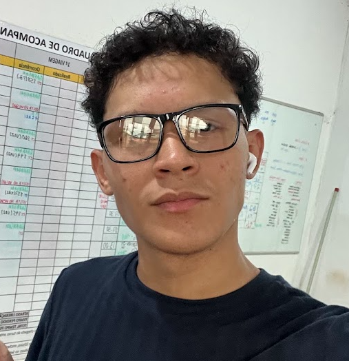

Estudante de Tecnologia / Desenvolvedor

E-mail: ruanmoreirav@gmail.com
LinkedIn: Meu Perfil
sou estudante de ciência da computação. Gosto de criar soluções próprias para problemas cotidianos, com isso melhorar minhas habilidades para resolver problemas.
| Categoria | Tecnologias | Nível |
|---|---|---|
| Linguagens | HTML5, C#, Python, Java, C | Iniciante / Intermediário |